Asakuchi, Okayama: things to do, food and stays
Asakuchi · Okayama
Asakuchi
Highlighted on the Okayama map.
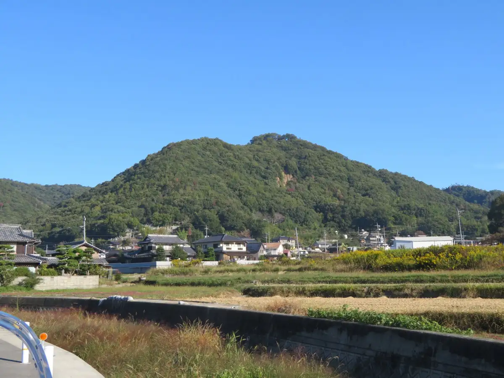
Stay
土佐家旅館
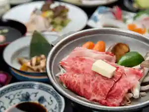
Tosa Ie Ryokan
Ryokan inn in Kanemitsu, Asakuchi with Wi-Fi and parking; 3-minute walk from Kanemitsu Station.
the view 瀬戸内
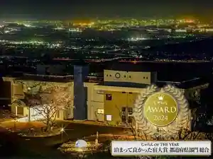
the view Setochi
Inn in Kanemitsu, Asakuchi with local seafood dinners.
Dining
手打うどんたぐち
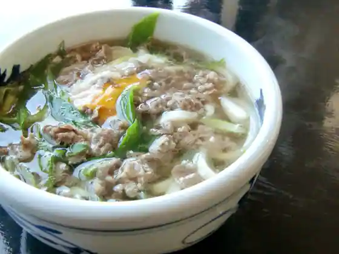
Teuchi Udontaguchi
ベトコンラーメン倉敷新京 鴨方店
Betokon Ramen Kurashiki Shinkyo Kamogata
麺屋 晴レ
Men Ya Sei Re
海賊亭
Kaizoku Tei
ACACIA洋食店
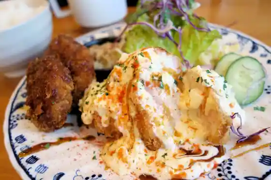
ACACIA Yoshoku
中華ラーメン たぐち
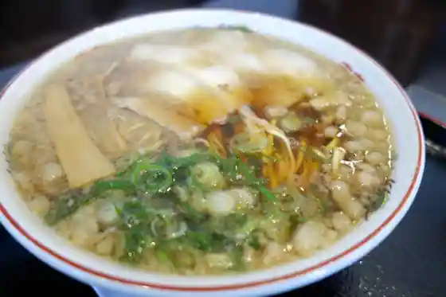
Chuka Ramen Taguchi
フランス洋食堂 ビストロ・ヴォナ村
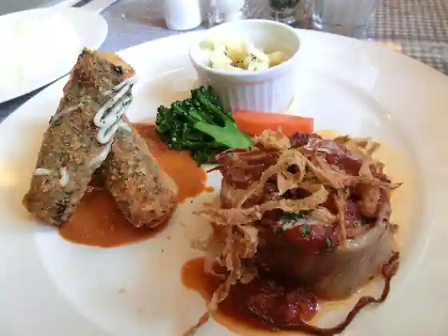
Furansu Hiroshi Shokudo Bistro Vona Mura
つちや食堂
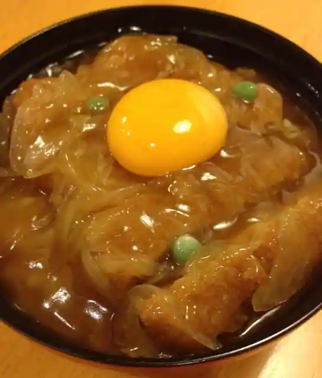
Tsuchiya Shokudo
麺蔵人
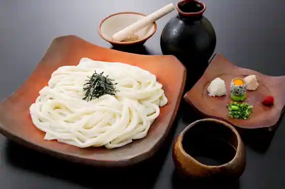
Men Kurabito
漁八
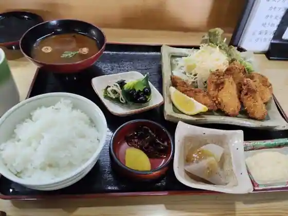
Ryo Hachi
銀座
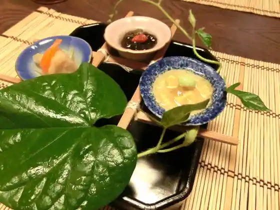
Ginza
ポッツピッピ
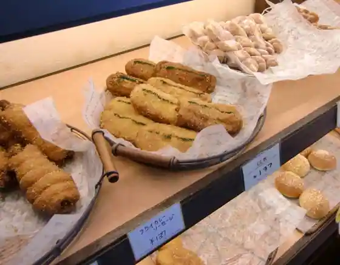
Pottsupippi
海辺のカフェ 日だまり
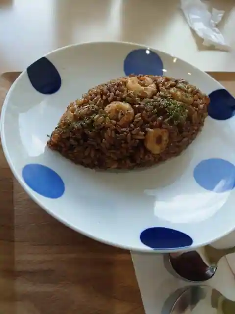
Umibe No Cafe Nichi Damari
麺屋つむぎ
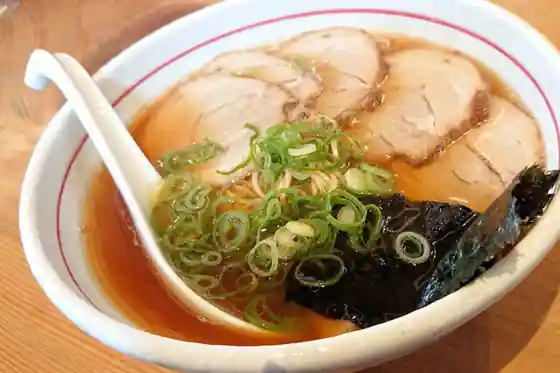
Men Ya Tsumugi
Ciel
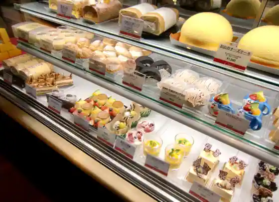
Ciel
焼肉ハウスかもがた
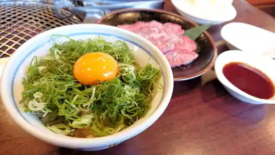
Yakiniku House Kamogata
手延 宮田
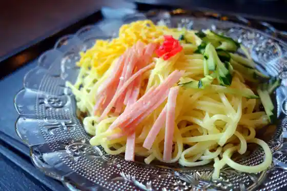
Te En Miyata
BAKERY麦ばたけ
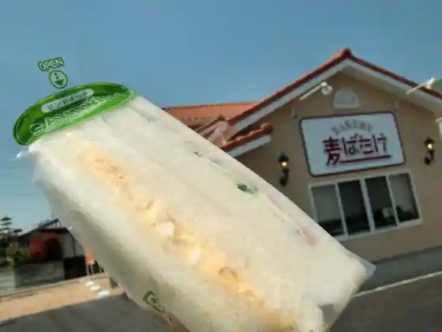
BAKERY Mugi Batake
かもがた亭 本店
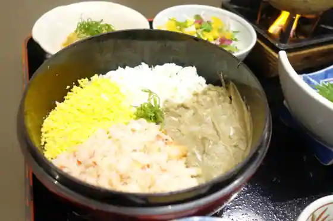
Kamogata Tei Hon
hana terrace
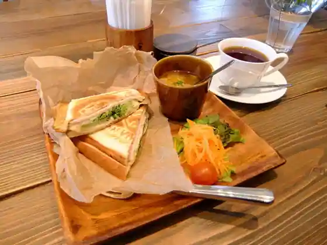
hana terrace
お好み焼き椿屋
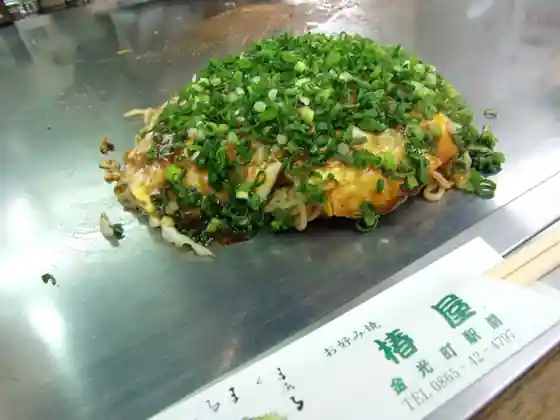
O Konomi Yaki Tsubaki Ya
ステーキハウス ラジャ634&武蔵の国 鴨方店
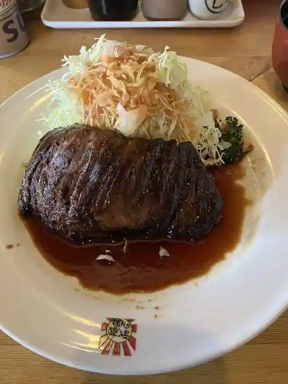
Steak House Raja 634& Musashi No Kuni Kamogata
おかやま山陽高校調理科プレゼンツ ラーメン さかて
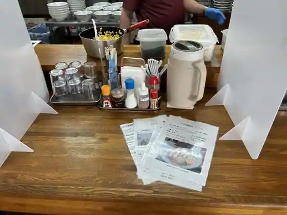
Okayama Sanyo Koko Chori Ka Purezentsu Ramen Sakate
パティスリー ベルジェ
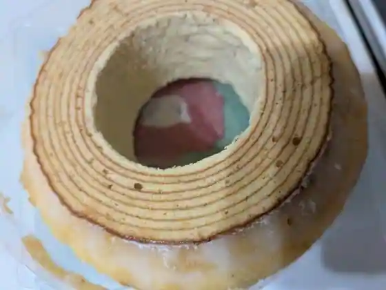
Pateisuri Berujie
Sights
Yori Shima Kaki Chokubai Tokoro
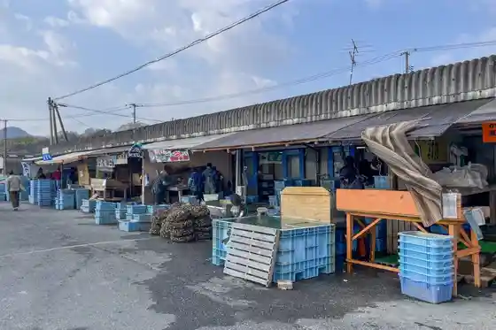
Atsugashiso Jisei Chi
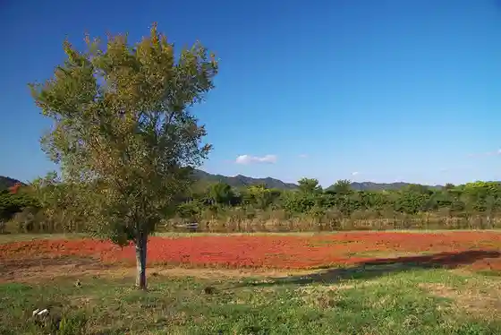
Okayama Tenmon Museum
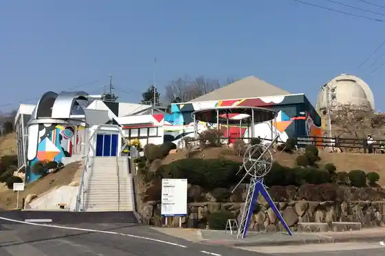
Yorishima Kaisen Market
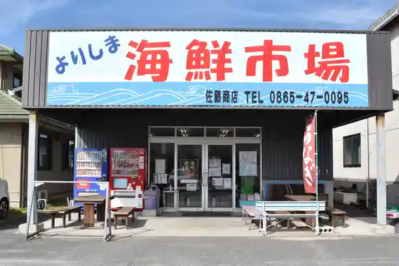
Asakuchi Amakusa General Park (Furusato Kamogata Plaza)
DOREMI COLLECTION MUSEUM
Kamo Kawate En Somen Men Kurabito
Higashi Kyo Farm
Yoshimi Kokoro Shuzo
Yori Shima Town Gyokyo Hama no Kachan Yorimichi Yori Shima Mise
Haruka Shozan Lookout
Asakuchi San Tsu Yama Supotsu Park
Haruka Shozan Onsen
Asakuchi Haruka Shozan General Park
Marumoto Shuzo
San Tsu Yama (Saburo Shima)
Kamo Kawate En Somen
Ao Sa Hana Coast
Sugitani Ike Shiawase Supotto
Taira Ki Shuzo
Yori Shima Shiikayakku &SUP Experience (Asakuchi Supotsu Club Asobu Tokoro)
Kamogata Town Ie Park
Setonaikai National Park Yori Shima Enchi
Kanemitsu Kyohon Bu
Haruka Shozan Me Kan Lookout
Kyotodaigaku Okayama Tenmondai
National Tenmondai Okayama Tentai Butsuri Kansokujo
Maruyama Park
Fujinami Ike Campground
Satomi Kawazoi no Sakura Namiki
Sugitani no Satoyama Kasseki Keiryu
Sugitani no Satoyama Sugiyama
Kyuko Ko Ie House (Densho Kan)
Myo In
Fudo Falls (Narutaki)
Ora Shrine
Kamogata Town Ie Kanrikumiai Annai Bu
Ue Take Chiku no Hotaru
Bitchu Sugiyama Castle Ruins
Gurutto ‘ Sugitani no Satoyama ’ Meguri
Gun Shrine
Asakuchi Ritsu Kamogata Local History Museum
Ato Hakkai Memorial Park